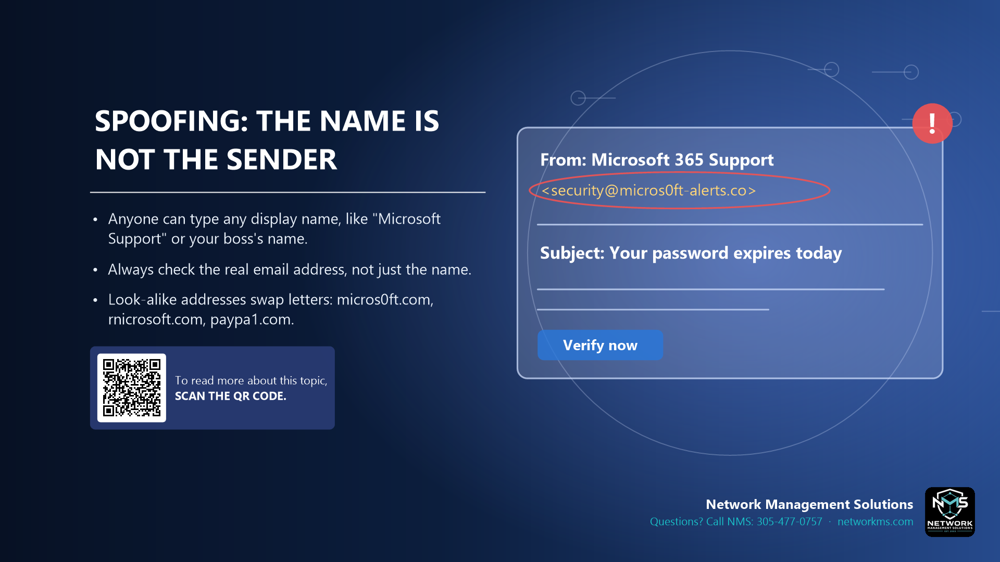

Spoofing: the name is not the sender

- Anyone can type any display name, like "Microsoft Support" or your boss's name.
- Always check the real email address, not just the name.
- Look-alike addresses swap letters: micros0ft.com, rnicrosoft.com, paypa1.com.
Spoofing is when a scammer makes a message look like it comes from someone else. The most common trick is the display name: the email shows "Microsoft 365 Support" or your manager's name, but the real address behind it is a stranger's Gmail or a fake domain.
Look-alike domains change one character so it looks right at a glance: a zero instead of an O (micros0ft.com), "rn" instead of "m" (rnicrosoft.com), a 1 instead of an L (paypa1.com), or extra words (microsoft-alerts.co).
On a phone, tap the sender's name to see the full address. On a computer, hover over the name. Also check the Reply-To: if you reply and the address changes, it is a scam.
Phone numbers and text messages can be spoofed too. A call that shows your bank's name is not proof it is your bank.